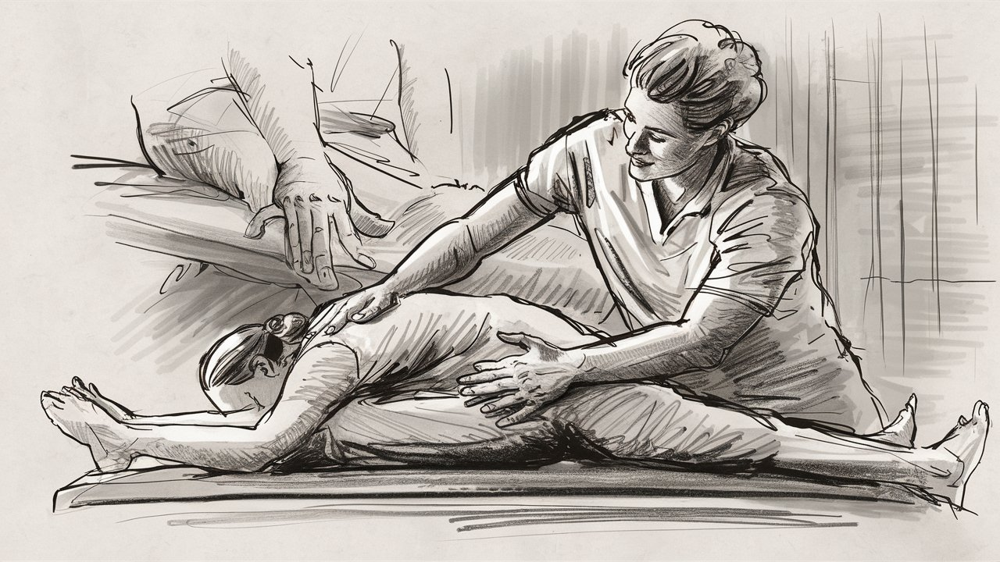

El área de fisioterapia y rehabilitación es la encargada de evaluar y tratar a las personas que presentan algún
problema de movimiento o función debido a una lesión, enfermedad, envejecimiento o factores ambientales. Su objetivo
es promover el bienestar, la salud, la prevención y la recuperación de las capacidades físicas de los pacientes, mediante
el uso de ejercicios, equipamiento especializado y técnicas manuales.

Servicio de medicina física
El área de medicina física se encarga de evaluar, diagnosticar y tratar las enfermedades y lesiones que afectan al
sistema nervioso, muscular y esquelético, y que causan dolor, discapacidad o limitación funcional
#.Seleccionar al personal: buscar, evaluar y contratar a los candidatos más adecuados para cada puesto de trabajo, siguiendo criterios de calidad y eficiencia.
#.Manejar las relaciones con los colaboradores: resolver conflictos, negociar convenios, fomentar la comunicación, el compromiso y la satisfacción laboral, y velar por
el cumplimiento de las normas y los derechos de los trabajadores.
#.Mejorar los departamentos que conforman la empresa: analizar y diseñar los puestos de trabajo, definir las funciones y responsabilidades de cada empleado, y optimizar
los recursos y procesos.
#.Gestionar la satisfacción laboral: evaluar el clima y la cultura organizacional, implementar estrategias de motivación y reconocimiento, y promover un ambiente de trabajo
saludable y productivo.
Misión: Nuestra misión es proporcionar tratamientos de fisioterapia de alta calidad y personalizados, centrados en la rehabilitación integral y el bienestar
de nuestros pacientes. Nos comprometemos a utilizar técnicas innovadoras y basadas en evidencia, mientras ofrecemos un entorno cálido y acogedor que promueve
la recuperación y mejora la calidad de vida de quienes confían en nuestros servicios.
Visión: Ser reconocidos como líderes en la atención de fisioterapia, destacándonos por nuestra excelencia clínica, ética profesional y compromiso con la
mejora continua. Aspiramos a ser un referente en la comunidad por nuestra capacidad para transformar positivamente la salud y el bienestar de nuestros pacientes,
siendo siempre un lugar donde la confianza y el cuidado van de la mano